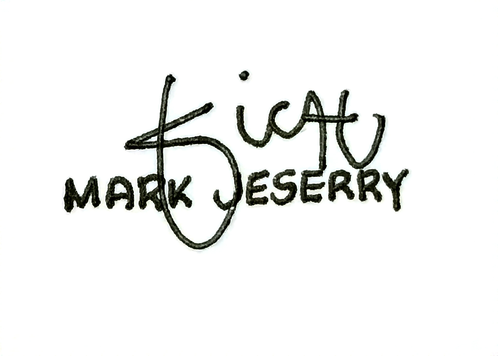

Jeserry Radcliffe
Jeserry Radcliffe

Jeserry's Graduation photo
| Born | Mark Jeserry Mosne Sicat |
|---|---|
| October 20, 2002 | |
| Angono Rizal, Philippines 1930 | |
| Hobby(s) | Badminton |
| Web Programming | |
| Web Designing | |
| Experiences | Procurement Stud Assistant |
| URS Morong 2023 | |
| Budget Officer Assistant | |
| URS Morong 2023 | |
| Technical Support | |
| Prulife of UK Internship | |
| Branch Assistant | |
| Prulife of UK 2025 | |
| Signature |  |
Mark Jeserry Sicat(born October 20, 2002) is a Filipino
aspiring computer programmer and software engineer. He graduated
from the University of Rizal System, Morong Rizal, with a
Bachelor of Science in Computer Science and earned the distinction
of Honors Cum Laude in the school year 2025. Jeserry is meticulous
and detail-oriented, particularly when it comes to design and
functionality in his projects and programs.
Jeserry began his formal education at
Dolores Elementary School
,where he developed his foundational knowledge and early interest
in learning. For high school, he attended
Francisco P. Felix Memorial National High School (FPFMNHS)
before transferring to
Mahabang Parang National High School (MPNHS) due to
financial challenges. Despite these obstacles, he excelled
academically and graduated with honors.
For senior high school, Jeserry enrolled at ICCT Colleges,
where he completed a comprehensive two-year program that further
honed his technical and analytical skills. His pursuit of
knowledge and dedication to computer science continued in college,
where he focused on software development, programming, and project
design. Born and raised in Angono, Rizal, Jeserry combines his
technical skills with a strong sense of creativity and a keen eye
for design, consistently striving to produce projects that are
both functional and visually appealing.